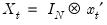

Background Observation Equation Process Equation Prior Distribution Posterior Distribution The TVCVAR consists of two equations, an observation equation and a process equation. The observation equation is a VAR equation with period-specific coefficients, and the process equation specifies a law of motion for the coefficients. The BTVCVAR combines the TVCVAR with a prior distribution over the initial state of the coefficients process and the model parameters. Observation Equation Let denoted the -vector of endogenous variables observed on date for . To motivate the two equations that form the TVCVAR, we start with the basic VAR model. The VAR equation under the basic VAR is where the covariate vector (48.1) consists of lags of and the vector of exogenous variables . The coefficient matrix is constant over time. We can get rid of this assumption by adding a time subscript on . Doing so yields the observation equation: (48.2) Vectorizing both sides of the observation equation gives (48.3) where  and . The error vector is given by where is the observation covariance matrix. Process Equation Making coefficients period-specific resolves the original problem, but introduces a new one: Taken alone, the observation equation results in a model that is over-parameterized for any sample size. We can mitigate this issue by specifying a law of motion for the coefficients. Typically this law of motion takes the form of a random walk process: This is the process equation. The process error is given by where is the process covariance matrix. The initial state of this process, , is specified as part of the prior. Prior Distribution The process equation is certainly helpful, but may not completely eliminate the problems that are associated with over-parameterization. Indeed, over-parameterization is often an issue even for the basic VAR. The usual solution is to “shrink” the model towards a simpler or stylized version of itself. The concept of shrinkage brings us to our next topic, the BTVCVAR. The BTVCVAR combines the TVCVAR with a prior distribution. Bayesians form priors based on information they have on the subject under study prior to seeing the data. For many non-Bayesians, the prior is simply a means for achieving shrinkage. To shrink the model towards a simpler or stylized version of itself, center the prior at the simpler/stylized model. Tightening the prior will then pull estimates towards the model at the center of the prior. One example of shrinkage was already mentioned; the TVCVAR can be made to shrink towards the basic VAR by specifying a tight prior about zero for the process error variance terms. Shrinking towards the basic VAR to some extent is desirable because it yields coefficient estimates that evolve more smoothly over time. The prior over the initial coefficient vector and covariance matrices and is where (48.4) See the prior specification subsection for details on how to set the prior hyper-parameters. The exposition here assumes an unrestricted process covariance matrix. In practice, it is more common to work with a diagonal . See the implementation details section for more information. Posterior Distribution The prior distribution combines with the likelihood function to form the posterior distribution, which becomes the basis for inference, predictions, etc. For example, a Bayesian point estimate is usually just the mean or median of the posterior distribution. Let denote the set of all observed data, and let denote the set of all coefficients including . The posterior distribution over the model unknowns , , and is given by where the first, second, and third terms on the right-hand side of the proportionality symbol correspond to the prior distribution, the observation equation, and the process equation, respectively. This distribution does not lend itself to vanilla Monte Carlo sampling. Fortunately, posterior simulation is possible using the Gibbs sampler. See “Implementation Details” for additional information.


 denoted the
denoted the  -vector of endogenous variables observed on date
-vector of endogenous variables observed on date  for
for  . To motivate the two equations that form the TVCVAR, we start with the basic VAR model. The VAR equation under the basic VAR is
. To motivate the two equations that form the TVCVAR, we start with the basic VAR model. The VAR equation under the basic VAR is lags of
lags of  and the vector of exogenous variables
and the vector of exogenous variables  . The coefficient matrix
. The coefficient matrix  is constant over time. We can get rid of this assumption by adding a time subscript on
is constant over time. We can get rid of this assumption by adding a time subscript on  . Doing so yields the observation equation:
. Doing so yields the observation equation: is given by where
is given by where  is the observation covariance matrix.
is the observation covariance matrix. is the process covariance matrix. The initial state of this process,
is the process covariance matrix. The initial state of this process,  , is specified as part of the prior.
, is specified as part of the prior. and
and  is
is . See the implementation details section for more information.
. See the implementation details section for more information. denote the set of all observed data, and let
denote the set of all observed data, and let  denote the set of all coefficients including
denote the set of all coefficients including  . The posterior distribution over the model unknowns
. The posterior distribution over the model unknowns  ,
,  , and
, and  is given by
is given by